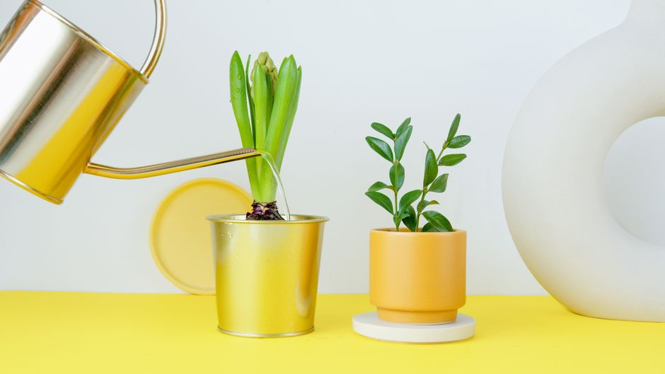
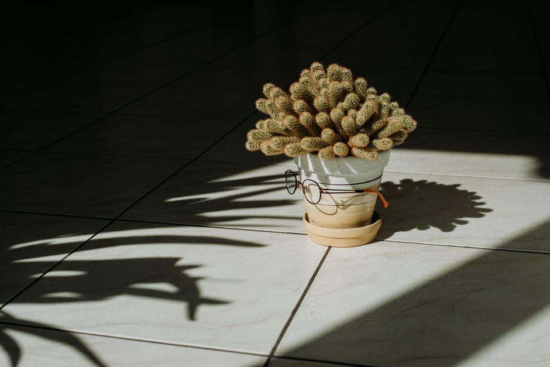

Les erreurs à éviter en matière d'éclairage pour les plantes d'intérieur

Photo: Artem Podrez / Pexels
L'erreur du soleil direct

Photo: Santa Atte / Pexels
Un des plus grands dangers pour les plantes d'intérieur est l'exposition directe au soleil. Si vous avez des plantes telles que le Pothos, le Monstera, le Chlorophytum ou l'Orchidée, ne les exposez jamais à une source de lumière directe, même si elles tolèrent la lumière vive. Le soleil direct peut brûler rapidement les feuilles, réduisant ainsi la beauté et la santé de votre plante. Par exemple, une exposition de 15 minutes à une fenêtre avec une orientation sud peut être suffisante pour causer des dommages irréversibles à une plante comme le Pothos. Placez ces plantes à une distance de 1 à 2 mètres de la fenêtre, où la lumière est indirecte.
Le suréclairage à faible intensité
Bien que les plantes d'intérieur aient besoin de lumière, une surabondance peut également nuire à leur croissance. Par exemple, la Zamioculcas, qui peut tolérer la faible lumière, est susceptible de développer une végétation excessive et molle si elle est exposée à des sources de lumière faible et intenses pendant de longues périodes. Il est préférable de maintenir une intensité de lumière de 10 000 lux environ, ce qui est similaire à la lumière d'une fenêtre ouverte dans une pièce bien éclairée.
L'oubli de l'adaptation à la lumière
Certains plantes, comme la Sansevieria, sont capables d'adapte à une variété de conditions de luminosité. Cependant, une transition trop rapide peut causer des stress à la plante. Pour éviter cela, augmentez progressivement le temps d'exposition de la plante à la lumière. Par exemple, si vous déplacez une plante de la penderie à la fenêtre, augmentez doucement la durée de son exposition à la lumière chaque jour. Au début, exposez-la pendant 15 minutes, puis augmentez cela progressivement jusqu'à 2 heures par jour.
La sous-éclairance des plantes à faible besoin en lumière
Les plantes qui tolèrent bien la faible lumière, comme le Pothos, peuvent aussi souffrir de la sous-éclairance. Si elles ne reçoivent pas suffisamment de lumière, elles peuvent devenir plus faibles et de couleur plus pâle, puis finalement se dessécher. Il est recommandé d'offrir à ces plantes une exposition à la lumière de 5 000 lux minimum, soit environ la lumière d'une fenêtre partiellement ouverte. Assurez-vous également de réduire la fréquence de l'arrosage lorsque vous réduisez la lumière, car la plante absorbera moins d'eau.
Le manque de régularité dans l'éclairage
La régularité de l'éclairage est essentielle pour le bien-être de vos plantes. Par exemple, si vous avez une plante comme l'Aloe Vera qui supporte bien le soleil direct, assurez-vous qu'elle reçoive cette lumière de manière régulière. Une plante en intérieur peut nécessiter entre 8 et 10 heures de lumière solaire naturelle par jour. Pour maintenir une croissance saine, utilisez un horaire régulier d'éclairage pour vos plantes, par exemple, exposez-les à la lumière directe de 10h à 18h.
La surévaluation de la lumière artificielle
Bien que l'éclairage LED soit une option pratique pour les plantes d'intérieur, il est important de ne pas surévaluer leur besoin de lumière. Une lumière artificielle trop intense ou excessive peut nuire à la santé de la plante. Par exemple, une plante comme le Ficus elastica nécessite environ 12 000 lux de lumière LED pour une croissance saine. Suréclairer la plante peut causer des dommages aux feuilles et des problèmes de santé globaux. Utilisez un diffuseur LED si vous avez besoin de lumière supplémentaire, mais n'excédez pas les 10 000 lux.
Conclusion
En conclusion, la clé pour un entretien réussi de vos plantes d'intérieur est d'éviter les erreurs liées à l'éclairage. En adaptant graduellement votre plante à une nouvelle lumière, en évitant le soleil direct, en utilisant la lumière artificielle de manière régulière et adaptée, vous pouvez garantir un environnement sain et propice à la croissance de vos plantes. N'oubliez pas que chaque plante a ses propres besoins en lumière, et il est important de les respecter pour leur permettre de prospérer.
Produits recommandés
En tant que Partenaire Amazon, je réalise un bénéfice sur les achats remplissant les conditions requises.